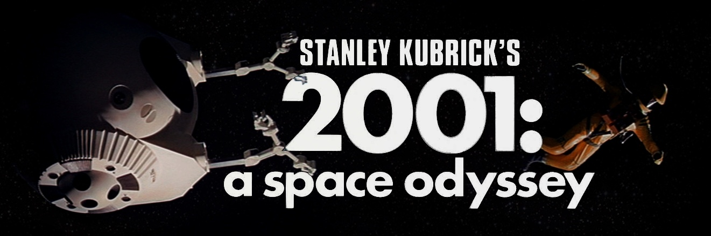

《2001太空漫游》讲述了史前人类在一块黑石板的召唤下觉醒，催生出了人类文明；而后又在几百万年后出现的又一块黑石板的引导下前往木星探索人类终极意义的故事。与新近上映的《普罗米修斯》相似，都反映了对于人类起源和灵魂归宿的探寻。
影片作为导演斯坦利.库布里克（同时也是编剧之一）“未来三部曲”（另外两部是《奇爱博士》和《发条橙》）之一，是科幻电影史上里程碑式的作品。库布里克不是高产的导演，而且不同作品涉及的领域跨度极大，但却能够把每种题材都演绎到极致。在这一点上如今的李安身上颇有当年库布里克的风范。
影片的另外一位编剧是有着“太空时代的桂冠诗人”之称的亚瑟.克拉克，与阿西莫夫和海因莱因并称为“世界科幻三巨头”。在《2001太空漫游》上映的同时，克拉克出版了同名小说。但是由于在某些方面存在分歧，库布里克并没有署名。随后克拉克又续写了《2010太空漫游》《2061太空漫游》《3001太空漫游》三部后作，完成了“太空漫游四部曲”。
该片于1965年开始拍摄，1968年上映。在当时的那个年代里，人类在1961年才第一次进入太空，阿波罗登月在影片上映1年之后才得以实现。可以说，当时的人类刚刚掀起宇宙神秘的面纱，对于太空中的图景并没有直观的认识。因此，影片中展现的太空图景，以及太空梭、空间站和超级电脑等高科技产物极大地刺激了当时观众的认知，影片丰富的想象力和惊人的预见性给观众带来的震撼效应可见一斑，具体情形可以参考《阿凡达》上映时产生的观影热潮。
影片在浩渺的宇宙背景和宏大的交响乐的渲染下充满了神秘主义的色彩，石碑、骨棒等符号也让不同的观众有着不同的解读。在笔者看来，石碑的4次出现仿佛4个路标，引导人类从茹毛饮血的“文明婴孩”时代，一步步走向旅途的终点。影片结尾宇航员Dave在石碑的面前化身为自由漂浮于宇宙之中的“星孩”，完成了命运的轮回。
当然，影片缓慢的节奏也让很多观众昏昏欲睡，尤其是影片开头3分钟的黑暗一度让很多观众认为是设备发生了故障。（不过也有人觉得这3分钟完全的黑暗特牛X，比如大刘。）
总之，在观看时怀着平静的心态，这是一部你不能错过的电影。